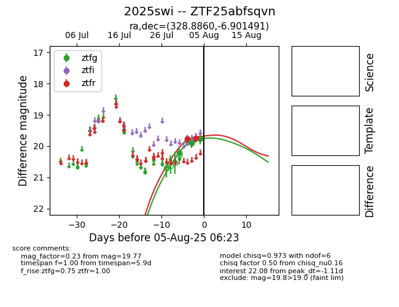

Target 2025swi at 2025-08-10 06:07, see:
FINK: fink-portal.org/2025swi
Lasair: lasair-ztf.lsst.ac.uk/objects/2025swi
ALeRCE: alerce.online/object/2025swi
TNS: wis-tns.org/object/2025swi
YSE: ziggy.ucolick.org/yse/transient_detail/2025swi
alt names
ZTF25abfsqvn (ztf,fink)
2025swi (tns,yse)
coordinates:
equatorial (ra, dec) = (328.8860,-6.90149)
galactic (l, b) = (50.5452,-43.68090)
photometry
last ztfg=19.49, ztfr=19.48
6 ztfg, 3 ztfr detections
